Plante, colha, cuide dos animais, produza pão, queijo e sorvete e transforme uma terrinha numa fazenda enorme. No seu ritmo, no celular ou no computador.
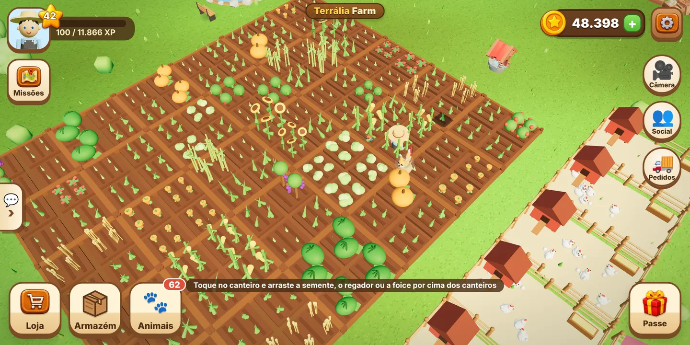
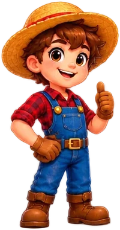
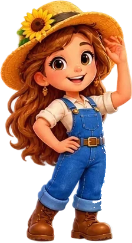
Cada dia tem uma colheita nova, um pedido para entregar e uma construção para desbloquear.
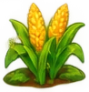
Trigo, milho, cenoura, tomate, morango, abóbora, uva e muito mais. Regue, adube e colha com um toque.
Galinhas, vacas, porcos, ovelhas, coelhos, patos e abelhas. Dê ração e colete ovos, leite, lã e mel.
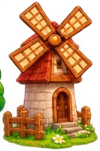
Moinho, padaria, laticínio, tecelagem, cozinha, engenho, doceria e sorveteria, todas animadas enquanto produzem.
Visite fazendas, ajude os vizinhos, converse no chat e monte uma cooperativa com a galera.
O Passe do Fazendeiro dá um prêmio para cada dia do mês: moedas, XP, materiais e baús.
Suba de nível, amplie suas terras e dispute o topo do ranking com fazendeiros de todo lugar.
O Tonho, seu ajudante, ensina tudo no começo.
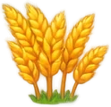
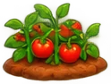
Escolha a semente, arraste por cima dos canteiros e volte quando estiver pronto.
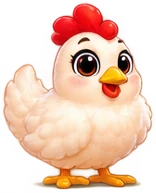
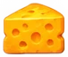
Faça ração no moinho, alimente os animais e transforme tudo em produtos nas fábricas.
Complete pedidos do caminhão e missões, ganhe moedas e XP e expanda a fazenda.
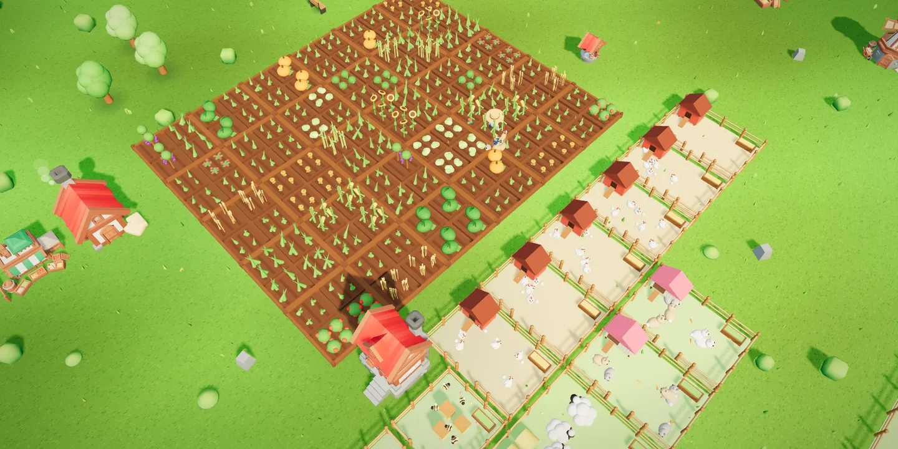
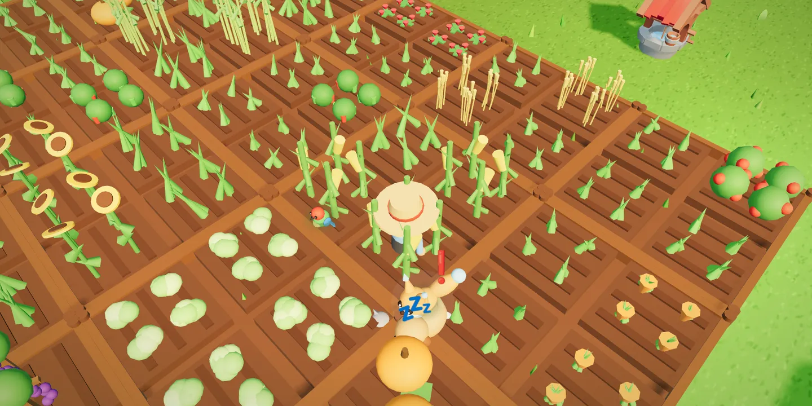
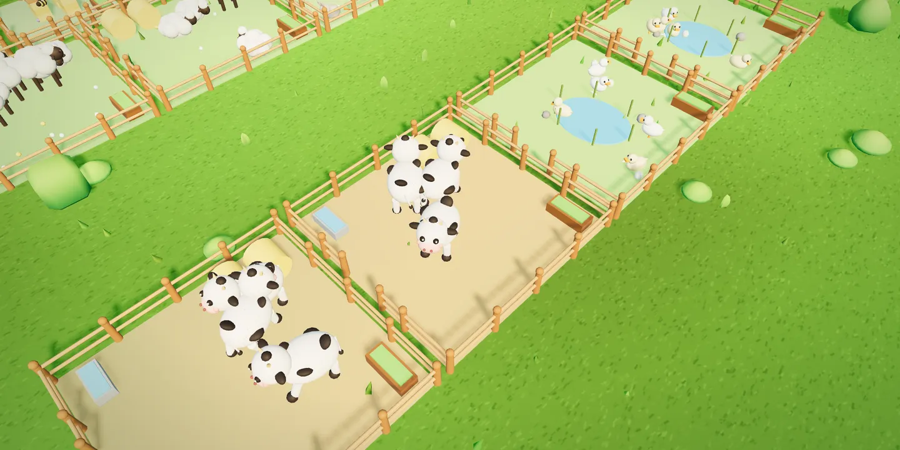
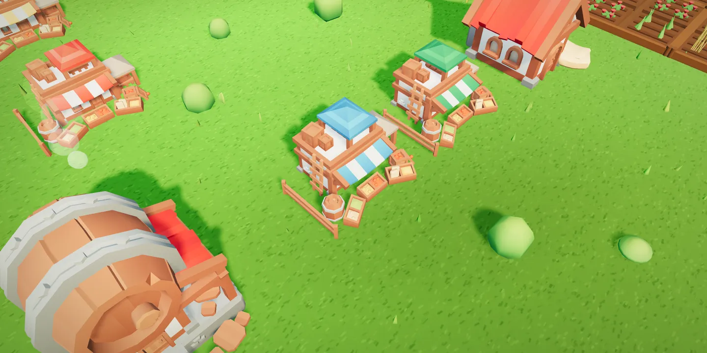
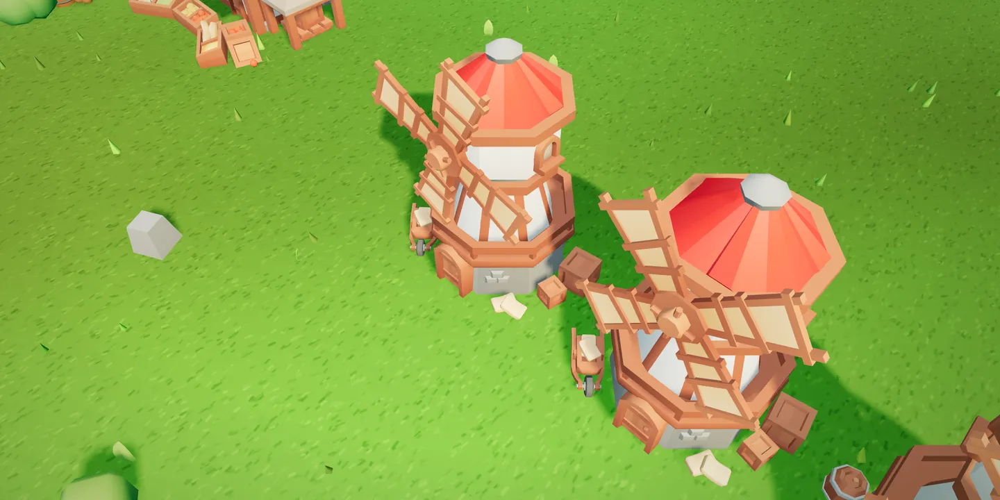
Sim. Dá para jogar tudo de graça, sem cadastro obrigatório.
Não. O jogo roda direto no navegador. Se quiser, você pode adicioná-lo à tela inicial do celular para abrir como um app.
Fica. Jogando como convidado, ele fica salvo no aparelho. Entrando com a conta Google, ele vai para a nuvem e você continua de onde parou em qualquer celular ou computador.
Sim, funciona em celulares Android e iPhone e em computadores com um navegador atualizado. No celular, jogue com a tela deitada.
Dá. Você pode visitar a fazenda dos amigos, ajudar nas plantações, conversar no chat, entrar numa cooperativa e disputar o ranking.
Sim, ele é atualizado com frequência. Quando sai uma versão nova, o próprio jogo avisa e atualiza sozinho.
Comece agora com uma terrinha e um poço. O resto você constrói.
🌻 Começar a jogar